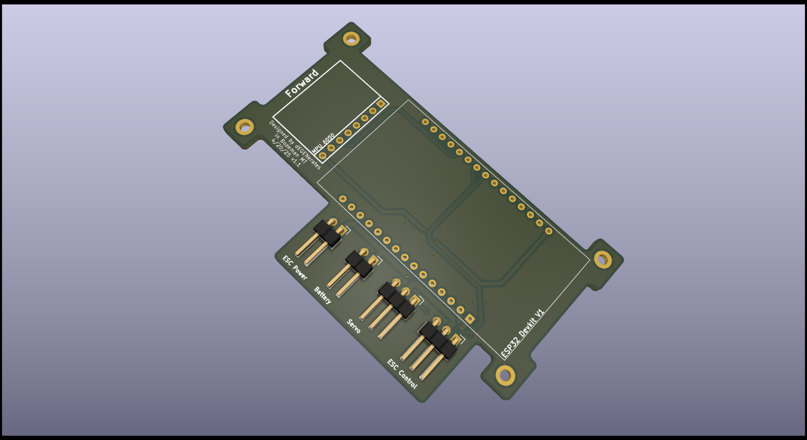
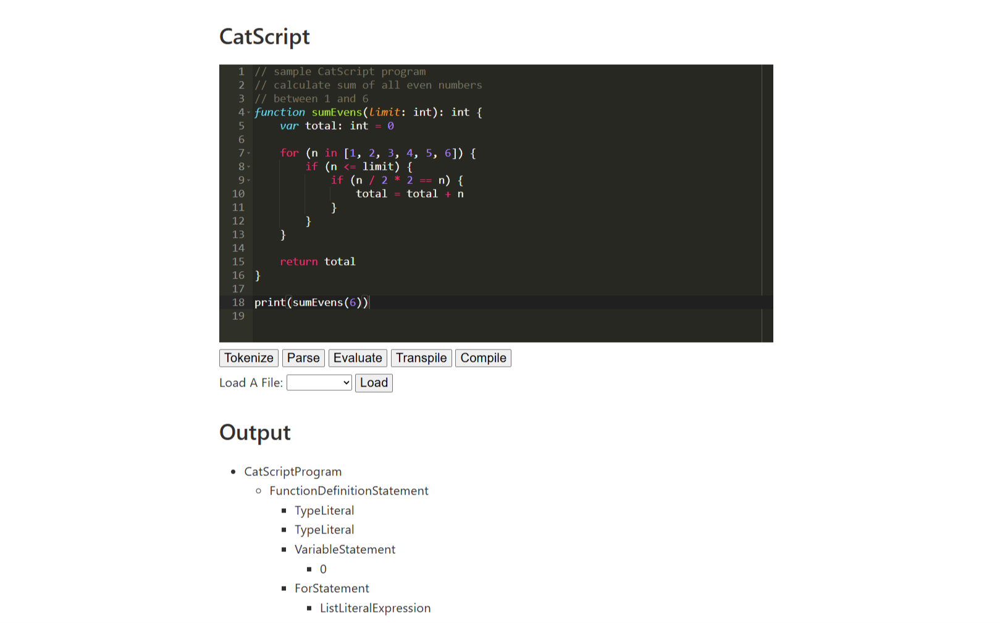
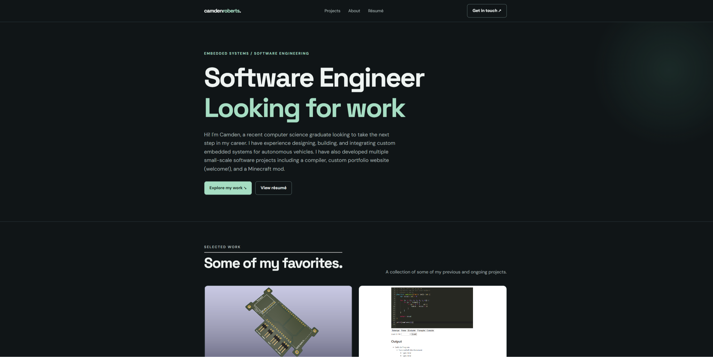
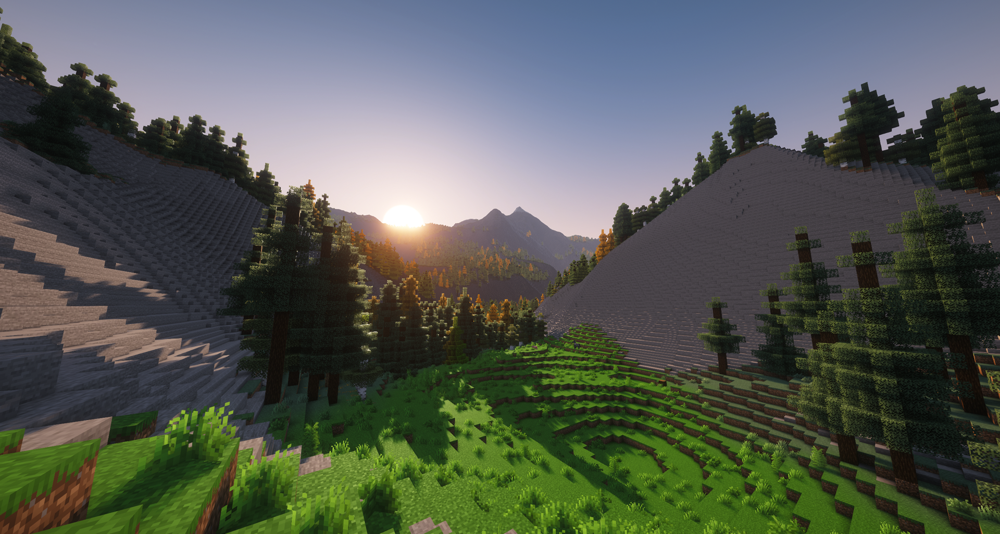

Embedded systems / software engineering
Software Engineer Looking for work
Hi! I'm Camden, a recent computer science graduate looking to take the next step in my career. I have experience designing, building, and integrating custom embedded systems for autonomous vehicles. I have also developed multiple small-scale software projects including a compiler, custom portfolio website (welcome!), and a Minecraft mod.
Selected work
Some of my favorites.
A collection of some of my previous and ongoing projects.

White Lightning
Independently designed controller PCB and embedded C++ firmware for a team-project physical FPV racing vehicle.
Learn more →
CatScript
Independently implemented a compiler within an academic environment, from tokenization to bytecode generation.
Learn more →
CamdenRoberts.com
The very same! A custom portfolio website with a TypeScript contact API, server-side validation, bot protection, and automated email delivery, deployed using Cloudflare Pages.
Learn more →
FiniteWorlds
A modular terrain generation mod for Minecraft, written with AI assistance, reworking game progression and bringing realistic geology, hydrology, and terrain to finite minecraft worlds.
Learn more →A little about me
Ready for the
next step.
I earned my B.S. in Computer Science from Montana State University in May 2026. My work has ranged
from building autonomous vehicle control systems to web development and technical training program
implementation in airline operations.
I'm interested in early-career engineering opportunities
involving embedded devices, systems software, web development, and practical applications.
Reach out
Have something in mind?
I'm open to discussing entry-level engineering careers, website and backend design opportunities, or any other technical projects in both hardware and software development!